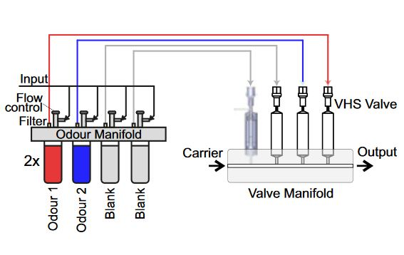
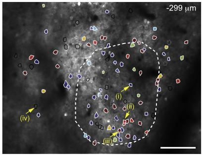
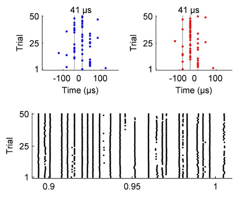

PUBLICATIONS

Fast odour dynamics are encoded in the olfactory system and guide behaviour
Ackels, T.*, Erskine, A.*, Dasgupta, D.*, Cristina, M., Warner, T., Tootoonian, S., Fukunaga, I., Harris, J., Schaefer, A. T. (Nature, 2021)
In this project we investigated whether the turbulent dynamics of naturally occurring odours were a useful sensory component of animal behavior.
Ultimately we found that mice were able to discriminate correlation structure in odour stimuli at high frequency, suggesting they are capable of using turbulent odour signals for navigation
and localisation. We overcame several large technical hurdles to achieve this finding, including development of a new method of measuring different odours simultaneously in the air (defPID); a new
olfactometer design capable of extremely precise and fast odour delivery; and integration of these tools into our previously developed automated training platform: AutonoMouse.

Behavioral and Neural Bases of Tactile Shape Discrimination Learning in Head-Fixed Mice
Kim, J., Erskine, A., Cheung, J. D., Hires, S. A. (Neuron 2020)
Using 2-photon imaging and head-fixed behavior, we uncovered how S1 neurons encode tactile shape, and how this encoding shifts over the course of learning.

AutonoMouse: High throughput operant conditioning reveals progressive impairment with graded olfactory bulb lesions
Erskine, A., Bus, T., Herb, J. T., Schaefer, A. T. (PLOS ONE 2019)
We developed AutonoMouse to reduce the bottleneck in neuroscience research from manual or semi-manual behavioral training and testing techniques. In AutonoMouse, large
cohorts of mice can be trained simultaneously over long periods with minimal experimenter intervention. Experiments in AutonoMouse can be designed, implemented and monitored remotely with dedicated software.
Using this system, we performed a systematic study of the effect of olfactory bulb disruption on olfactory discrimination, finding that olfactory memory was the most prominently modified behaviour.

Prediction of primary somatosensory neuron activity during active tactile exploration
Campagner, D., Evans, H. M., Bale, M. R., Erskine, A., Petersen, R. S. (eLife 2016)
This study used high-speed videography with awake electrophysiology to uncover the kinematic variables encoded by trigeminal afferents in the whisker system.

Microsecond-scale timing precision in rodent trigeminal primary afferents
Bale, M. R., Campagner, D. Erskine, A., Petersen, R. S. (JNeurosci 2015)
Here we uncovered the extraordinary precision in spike-timing and information capacity of rodent whisker trigeminal afferents.